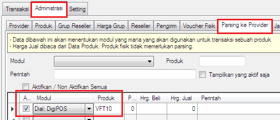

Fisik Auto Shift
Di OtomaX, selain pulsa elektrik Anda juga dapat menjual voucher fisik. Mula - mula voucher fisik digosok bagian hologram yang mengamankan kode voucher bernilai sejumlah nominal pulsa tertentu, seperti 10k, 25k, 50k, 100k. Kemudian kode voucher tersebut dimasukkan ke OtomaX dan dapat ditransaksikan oleh Reseller dijual ke konsumen klik disini.
Di versi 4.0.0 manakala Anda berjualan voucher fisik dan suatu ketika voucher habis, OtomaX dapat secara otomatis mengalihkan transaksi tersebut ke modul pulsa elektrik sehingga berpotensi meningkatkan jumlah transaksi sukses dan tentunya meningkatkan laba juga, tidak gagal seperti di versi terdahulu. Sebab, di versi ini telah dilengkapi fitur baru bernama Fisik Auto Shift yang akan menanganinya.
Perlu diketahui fitur Fisik Auto Shift hanya tersedia di OtomaX edisi Standard ke atas, jadi apabila ingin menikmatinya dan edisi OtomaX Anda bukan edisi tersebut harus upgrade dahulu klik disini, jika ingin membayar iuran tahunan OtomaX klik disini, dan jika belum memiliki OtomaX atau ingin menambah bisa melakukan pembelian dengan klik disini.
Untuk mengaktifkan fitur ini, misalnya Anda berjualan voucher fisik Telkomsel, maka di modul yang memproses pulsa elektrik Telkomsel buat Kode Produk yang sama dengan Kode Produk voucher fisik di parsingnya, dan jangan lupa parsing diaktifkan. Perhatikan gambar berikut:

Dengan diatur demikian, ketika voucher fisik Telkomsel habis, maka otomatis transaksi akan dialihkan ke modul pulsa elektrik Telkomsel bernama DigiPOS. Apabila tidak ingin dialihkan, Non Aktifkan parsing.